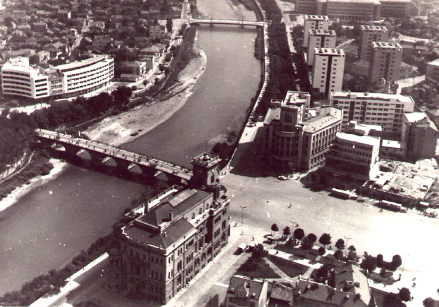
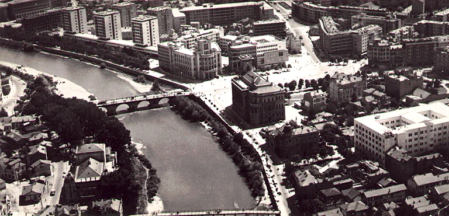
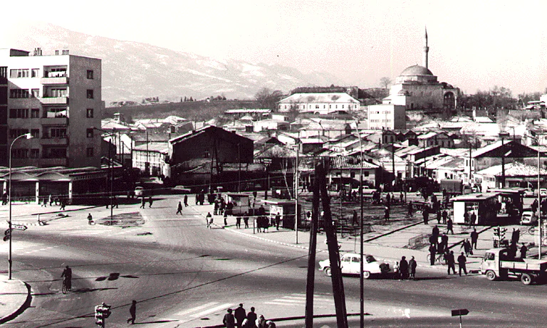

Plaza
- Guion
- Dimitrie Osmanli, Simon Drakul
- Cámara
- Kiro Bilbilovski
- Año
- 1964
- Duración
- 00:06

Vista de la ciudad, con la Torre del Reloj a la derecha y la mezquita de Gazi Isa Bey a la izquierda, con el barrio «Saat Kula». (años 1940)

El puente de hormigón junto al actual hotel «Grand». Al fondo se ve la fortaleza de Skopie - Kale. (años 1950)

Panorama de Skopie. (años 1950)

Panorama de Skopie. En primer plano, el puente de hormigón (junto al actual Gran Hotel); al fondo, el puente de piedra y los edificios del Casino de Oficiales y el Banco Nacional. Arriba a la derecha se ve la fortaleza de Skopie - Kale. El malecón está urbanizado como paseo y calzada, con zonas verdes entre ambos. (años 1950)

Vista del puente de hormigón (junto al actual Gran Hotel). En primer plano, el barrio de Pajko. Al fondo, la fortaleza de Skopie - Kale y, a su derecha, la mezquita de Mustafa Pachá. (años 1950)

Skopie, años 1950, con nuevos edificios de viviendas. En el centro, el solar del actual Mercado Verde.

Panorama de la ciudad de Skopie. En primer plano, la plaza de la Libertad. La calle hacia el río Vardar es la «Vasil Glavinov». En la primera esquina de la plaza se ve la entrada de la escuela «Goce Delčev». - años 1950

La plaza «Sloboda». Al fondo se ven el Casino de Oficiales y el Banco Nacional. - años 1950

El centro de Skopie antes del terremoto - hacia 1960.

Fotografía panorámica aérea de la zona central de Skopie. La plaza con el Casino de Oficiales, el Banco Nacional y la Cámara de Comercio. A la derecha, la oficina central de correos; abajo a la izquierda, el tejado del Teatro Nacional. La foto es de los años 1950.

Fotografía panorámica de la zona central de Skopie, - años 1950

Fotografía aérea de la zona central antes del terremoto - 1963. Entre las torres (arriba a la derecha), donde hoy está el centro comercial, se ve la iglesia «Zar Constantino y Zarina Elena».

Panorama de una parte del antiguo bazar de Skopie, años 1950.

Vista de parte del Bit Pazar y del antiguo bazar. Sobre ellos se ve la mezquita de Mustafa Pachá. (años 1950)

Vista del centro de Skopie. El puente de piedra todavía se usa para el tráfico. La foto se tomó poco después del catastrófico terremoto del 26 de julio de 1963.

Skopie en 1968. Ubicación del actual centro comercial municipal.

Fotografía panorámica del centro de la ciudad. La plaza todavía se usa como aparcamiento de vehículos.
(años 1960)

Panorama del centro de la ciudad con la canalización del Vardar, fotografiado desde la fortaleza de Skopie - Kale. (años 1970). En primer plano, el puente de piedra, los grandes almacenes Pelister y otros edificios.

Vista desde la fortaleza de Skopie - Kale hacia el centro de Skopie. El paseo de la margen derecha del Vardar está lleno de gente. (años 1970)
Vista desde la fortaleza de Skopie - Kale hacia el centro de Skopie. (años 1970)

Vista de la margen izquierda del Vardar, junto al puente de piedra. En la parte inferior de la foto se ve parte de la iglesia de San Demetrio. (años 1970)

Vista de la margen izquierda del Vardar, junto al puente de piedra. En la parte inferior de la foto se ve parte de la iglesia de San Demetrio. (años 1980)

Panorama de Skopie. En primer plano, el pequeño parque «Mujer combatiente». Abajo a la izquierda se ve parte del hospital municipal y parte del edificio de la Asamblea. - años 1980.

El parque «Mujer combatiente» con el Centro Comercial Municipal y edificios residenciales y públicos de Skopie. - años 1980.

Vista del bulevar y el puente «Goce Delčev» con el paso elevado en primer plano. Al fondo, el Centro de Telecomunicaciones y parte del complejo residencial «Gradski zid». (años 1980)

Vista de la zona central de la ciudad. En primer plano, parte de los bancos, el puente «Revolucija» y el teatro. Al fondo, el puente de hormigón, el puente de piedra y el Centro de Telecomunicaciones - años 1980.

Vista de la zona central desde la azotea del actual Instituto de Finanzas. A lo lejos se ve el puente de piedra. A la derecha de la postal, el actual teatro y, sobre él, se adivina la fortaleza de Skopie - Kale - años 1980.

Skopie a finales de los años 1970. El puente junto al actual hotel «Grand». A la izquierda se alza el edificio de la Radiotelevisión Macedonia y, a la derecha, el del actual Instituto de Pagos.

Panorama de Skopie desde la ladera del monte Vodno. En primer plano, el hotel «Panorama». (años 1980)

Panorama de Skopie de noche, desde las laderas del monte Vodno. (años 1980)

 Acueducto4 postales
Acueducto4 postales Kale30 postales
Kale30 postales Puentes60 postales
Puentes60 postales Malecón58 postales
Malecón58 postales Plaza46 postales
Plaza46 postales Edificios66 postales
Edificios66 postales Templos cristianos19 postales
Templos cristianos19 postales Edificios musulmanes33 postales
Edificios musulmanes33 postales Casino de Oficiales29 postales
Casino de Oficiales29 postales Teatro28 postales
Teatro28 postales Estación de ferrocarril13 postales
Estación de ferrocarril13 postales Escuelas36 postales
Escuelas36 postales Parques12 postales
Parques12 postales Mercados18 postales
Mercados18 postales Calles38 postales
Calles38 postales Panorama I60 postales
Panorama I60 postales Panorama II30 postales
Panorama II30 postales Collages55 postales
Collages55 postales Inundaciones9 postales
Inundaciones9 postales Terremoto27 postales
Terremoto27 postales Skopie 200026 postales
Skopie 200026 postales